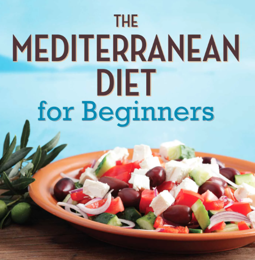

Dishes

Sheet Pan and Veggies
A quick sheet pan with roasted peppers and onions, we nestle the eggs in and bake for just a few minutes. Great with whole grain bread or challah bread! See the full recipe here.
For the last couple of years I have been a big fan of the Mediterran Diet which is primarily found in the Mediterranean region of the world to include Spain , Italy , Greece and other countries that border the Mediterranean Sea. The diet consists of plant-based foods, such as whole grains, vegetables, legumes, fruits, nuts, seeds, herbs and spices, as the foundation of the diet.
The list of Mediterranean recipes below should give you a great start! But just for simplicity's sake, here's a very general summary to help you eat the Mediterranean way:
A quick sheet pan with roasted peppers and onions, we nestle the eggs in and bake for just a few minutes. Great with whole grain bread or challah bread! See the full recipe here.
Likely one of my favorite egg dishes, and another winner you can make for breakfast, lunch, or dinner. Gently poached eggs in a chunky tomato mixture with bell peppers, onions and garlic. See the full recipe here.
Zucchini, onions, and bell pepper, paired with succulent shrimp, and protein-packed chickpeas come together in just one skillet. And you’ll love the bold Mediterranean flavors from spices, tangy lemon juice, and fresh herbs. See the full recipe here.